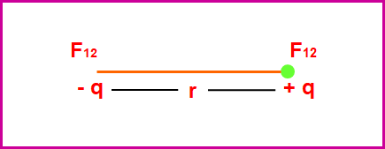
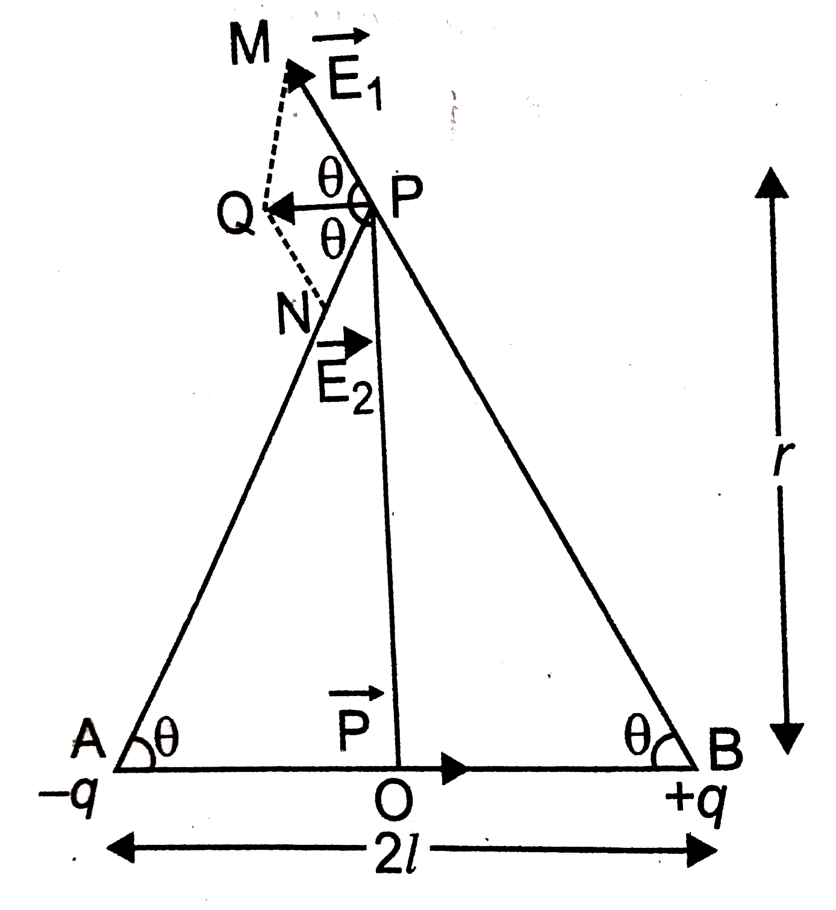

यूनिट 1(A) स्थिर विद्युत -I
Q. विद्युत क्या है? यह कितने प्रकार की होती है?
विद्युत ऊर्जा का वह रूप है जो आवेशित कणों (इलेक्ट्रॉनों) की उपस्थिति या गति के कारण उत्पन्न होती है।
विद्युत मुख्यतः दो प्रकार की होती है—
1. स्थिर विद्युत :
इसमें विद्युत आवेश किसी वस्तु पर स्थिर रहता है और उसका प्रवाह नहीं होता। यह घर्षण, प्रेरण या स्पर्श के कारण उत्पन्न होती है।
इसमें विद्युत आवेश किसी वस्तु पर स्थिर रहता है और उसका प्रवाह नहीं होता। यह घर्षण, प्रेरण या स्पर्श के कारण उत्पन्न होती है।
2. धारा विद्युत :
इसमें विद्युत आवेश किसी चालक में निरंतर प्रवाहित होता है। यह बैटरी या जनरेटर जैसे स्रोतों के कारण प्राप्त होती है।
इसमें विद्युत आवेश किसी चालक में निरंतर प्रवाहित होता है। यह बैटरी या जनरेटर जैसे स्रोतों के कारण प्राप्त होती है।
Q. आवेश क्या है? यह कितने प्रकार का होता है?
आवेश पदार्थ का वह गुण है जिसके कारण वह विद्युत तथा चुंबकीय प्रभाव उत्पन्न करता है या उनसे प्रभावित होता है।
आवेश मुख्यतः दो प्रकार का होता है—
1. धन आवेश:
यह इलेक्ट्रॉनों की कमी के कारण उत्पन्न होता है।
यह इलेक्ट्रॉनों की कमी के कारण उत्पन्न होता है।
2. ऋण आवेश :
यह इलेक्ट्रॉनों की अधिकता के कारण उत्पन्न होता है।
यह इलेक्ट्रॉनों की अधिकता के कारण उत्पन्न होता है।
Q. आवेश संरक्षण का नियम लिखिए।
आवेश संरक्षण के नियम के अनुसार किसी भी पृथक निकाय में कुल विद्युत आवेश सदैव नियत रहता है। इसे न तो उत्पन्न किया जा सकता है और न ही नष्ट किया जा सकता है, केवल एक वस्तु से दूसरी वस्तु में स्थानांतरित किया जा सकता है।
Q. घर्षण विद्युत किसे कहते हैं?
जब दो भिन्न पदार्थों को आपस में रगड़ा (घर्षण) जाता है, तो इलेक्ट्रॉनों के स्थानांतरण के कारण उनमें विद्युत आवेश उत्पन्न हो जाता है। इस प्रकार उत्पन्न होने वाली विद्युत को घर्षण विद्युत कहते हैं।
Q. जब एबोनाइट की छड़ को ऊन पर रगड़ा जाता है तो उस पर ऋण आवेश आ जाता है, क्यों?
जब एबोनाइट की छड़ को ऊन पर रगड़ा जाता है, तो ऊन के इलेक्ट्रॉन एबोनाइट की छड़ पर स्थानांतरित हो जाते हैं। इलेक्ट्रॉनों के इस स्थानांतरण के कारण एबोनाइट की छड़ पर अतिरिक्त इलेक्ट्रॉन आ जाते हैं, जिससे वह ऋण आवेशित हो जाती है।
Q. जब कांच की छड़ को रेशम पर रगड़ा जाता है तो इस पर धन आवेश उत्पन्न हो जाता है, क्यों?
जब कांच की छड़ को रेशम के कपड़े पर रगड़ा जाता है, तो कांच की छड़ से इलेक्ट्रॉन रेशम के कपड़े में स्थानांतरित हो जाते हैं। इलेक्ट्रॉनों की कमी के कारण कांच की छड़ पर धन आवेश उत्पन्न हो जाता है।
Q. आवेश का क्वांटीकरण से क्या अभिप्राय है? तथा मूल आवेश क्या होता है?
प्रकृति में आवेश सदैव एक निश्चित न्यूनतम मान के पूर्ण गुणज के रूप में पाया जाता है। इसे आवेश का क्वांटीकरण या परमाणुकता कहते हैं। इस न्यूनतम आवेश को मूल आवेश (Elementary Charge) कहते हैं।
$$ q = \pm ne $$
जहाँ n = 1, 2, 3, 4, ... तथा e = मूल आवेश (1.6 × 10⁻¹⁹ C)
Q. मूल आवेश किसे कहते हैं?
प्रकृति में पाया जाने वाला सबसे छोटा स्वतंत्र विद्युत आवेश मूल आवेश कहलाता है। इसे इलेक्ट्रॉन या प्रोटॉन के आवेश के रूप में भी परिभाषित किया जाता है।
मूल आवेश का मान:
\( e = 1.6 \times 10^{-19} \, C \)
Q. कूलॉम के व्युत्क्रम वर्ग नियम के आधार पर कूलॉम के नियम की परिभाषा लिखिए।

किसी भी दो आवेशों के बीच लगने वाला आकर्षण या प्रतिकर्षण बल उनके आवेशों के गुणनफल के समानुपाती तथा उनके बीच की दूरी के वर्ग के व्युत्क्रमानुपाती होता है।
$$ F \propto Q_1 Q_2 $$
$$ F \propto \frac{1}{r^2} $$
$$
F = \frac{1}{4 \pi \varepsilon_0} \cdot \frac{Q_1 Q_2}{r^2}
$$
SI प्रणाली में k = 1/4πε₀ = 9 × 10⁹ N m²/C²
Q. विद्युत क्षेत्र किसे कहते हैं?
किसी आवेश के चारों ओर वह क्षेत्र जहाँ तक उसका प्रभाव अनुभव किया जा सकता है, विद्युत क्षेत्र कहलाता है।
Q. विद्युत क्षेत्र की तीव्रता क्या है? इसका मात्रक लिखिए।
किसी बिंदु पर रखे गए एकांक धनावेश पर लगने वाला बल उस बिंदु पर विद्युत क्षेत्र की तीव्रता कहलाता है।
$$ E = \frac{F}{Q} $$
SI मात्रक = न्यूटन/कूलॉम या वोल्ट/मीटर
Q. किसी बिंदु आवेश के कारण उत्पन्न विद्युत क्षेत्र के किसी बिंदु पर विद्युत क्षेत्र की तीव्रता ज्ञात कीजिए।
माना Q आवेश के कारण उत्पन्न विद्युत क्षेत्र में उससे r दूरी पर स्थित बिंदु P पर विद्युत क्षेत्र की तीव्रता ज्ञात करनी है।
इसके लिए बिंदु P पर एकांक धन आवेश रखा जाता है।
$$
E = \frac{1}{4\pi \varepsilon_0} \cdot \frac{Q}{r^2}
$$
यह Coulomb के नियम के आधार पर प्राप्त विद्युत क्षेत्र का सूत्र है।
Q. विद्युत द्विध्रुव (Electric Dipole) से क्या अभिप्राय है?
यदि दो बराबर परंतु विपरीत प्रकृति के आवेश एक दूसरे के बहुत निकट दूरी पर स्थित हों, तो इस निकाय को विद्युत द्विध्रुव कहते हैं।
द्विध्रुव के दोनों आवेशों को जोड़ने वाली रेखा को द्विध्रुव अक्ष कहा जाता है।
---
Q. विद्युत द्विध्रुव आघूर्ण (Electric Dipole Moment) क्या है? इसका मात्रक लिखिए।
किसी विद्युत द्विध्रुव के एक आवेश तथा दोनों आवेशों के बीच की दूरी के गुणनफल को विद्युत द्विध्रुव आघूर्ण कहते हैं। इसे P से प्रदर्शित किया जाता है।
$$
P = q \times 2l
$$
यह एक अदिश राशि है तथा इसकी दिशा ऋण आवेश से धन आवेश की ओर होती है।
SI मात्रक = कूलॉम × मीटर (C·m)
Q. किसी विद्युत द्विध्रुव की अक्षीय (अनुदैर्ध्य) स्थिति में विद्युत क्षेत्र की तीव्रता ज्ञात कीजिए।

माना एक विद्युत द्विध्रुव \(AB\) है, जिसके सिरों पर \(-Q\) तथा \(+Q\) आवेश स्थित हैं और उनके बीच की दूरी \(2l\) है।
द्विध्रुव के केंद्र \(O\) से \(r\) दूरी पर अक्षीय स्थिति में बिंदु \(P\) पर विद्युत क्षेत्र ज्ञात करना है।
बिंदु \(P\) पर एकांक धन आवेश की कल्पना करते हैं।
चित्रानुसार:
\[
AP = r + l \quad \text{तथा} \quad BP = r - l
\]
+Q आवेश के कारण बिंदू P पर लगने वाला बल
$$
F_1 = \frac{1}{4\pi \varepsilon_0} \cdot \frac{Q}{(r - l)^2}
$$
(BP दिशा में)
-Q आवेश के कारण बिंदू P पर लगने वाला बल
$$
F_2 = \frac{1}{4\pi \varepsilon_0} \cdot \frac{Q}{(r + l)^2}
$$
(PA दिशा में)
अतः परिणामी विद्युत क्षेत्र:
$$
E = F_1 - F_2
$$
$$
E = \frac{Q}{4\pi \varepsilon_0 (r - l)^2} - \frac{Q}{4\pi \varepsilon_0 (r + l)^2}
$$
$$
E = \frac{Q}{4\pi \varepsilon_0} \left[\frac{1}{(r - l)^2} - \frac{1}{(r + l)^2}\right]
$$
$$
E = \frac{Q}{4\pi \varepsilon_0} \cdot \left[
\frac{(r + l)^2 - (r - l)^2}{(r^2 - l^2)^2}
\right]
$$
$$
E = \frac{Q}{4\pi \varepsilon_0} \cdot \frac{4rl}{(r^2 - l^2)^2}
$$
यदि द्विध्रुव बहुत छोटा हो (l² ≪ r²), तो l² को नगण्य मानते हैं:
$$
E = \frac{1}{4\pi \varepsilon_0} \cdot \frac{4Qrl}{r^4}
$$
$$
E = \frac{1}{4\pi \varepsilon_0} \cdot \frac{2(2Ql)}{r^3}
$$
$$
E = \frac{1}{4\pi \varepsilon_0} \cdot \frac{2P}{r^3}
$$
जहाँ P = Q × 2l (विद्युत द्विध्रुव आघूर्ण)
Q. किसी विद्युत द्विध्रुव की निरक्षीय (अनुदैर्ध्य के लम्बवत) स्थिति में विद्युत क्षेत्र की तीव्रता ज्ञात कीजिए।

माना एक विद्युत द्विध्रुव \(AB\) है, जिसके सिरों पर \(-Q\) तथा \(+Q\) आवेश स्थित हैं और उनके बीच की दूरी \(2l\) है।
द्विध्रुव के केंद्र \(O\) से \(r\) दूरी पर निरक्षीय स्थिति में बिंदु \(P\) पर विद्युत क्षेत्र ज्ञात करना है।
बिंदु \(P\) पर एकांक धन आवेश की कल्पना करते हैं।
चित्रानुसार:
\[
AP = BP = \sqrt{r^2 + l^2}
\]
\[
\cos\theta = \frac{l}{\sqrt{r^2 + l^2}}
\]
+Q आवेश के कारण बिंदु P पर लगने वाला बल
$$
F_1 = \frac{1}{4\pi \varepsilon_0} \cdot \frac{Q}{(r^2 + l^2)} \; (\text{BP दिशा में})
$$
-Q आवेश के कारण बिंदु P पर लगने वाला बल
$$
F_2 = \frac{1}{4\pi \varepsilon_0} \cdot \frac{Q}{(r^2 + l^2)} \; (\overrightarrow{PA})
$$
चूँकि \(F_1 = F_2\), अतः लम्बवत घटक निरस्त हो जाते हैं और क्षैतिज घटक जुड़ते हैं।
अतः परिणामी विद्युत क्षेत्र:
$$
E = F_1 \cos\theta + F_2 \cos\theta
$$
$$
E = 2F_1 \cos\theta
$$
$$
E = 2 \cdot \frac{1}{4\pi \varepsilon_0} \cdot \frac{Q}{(r^2 + l^2)} \cdot \frac{l}{\sqrt{r^2 + l^2}}
$$
$$
E = \frac{1}{4\pi \varepsilon_0} \cdot \frac{2Ql}{(r^2 + l^2)^{3/2}}
$$
$$
E = \frac{1}{4\pi \varepsilon_0} \cdot \frac{P}{(r^2 + l^2)^{3/2}}
$$
जहाँ \(P = Q \times 2l\)
यदि द्विध्रुव बहुत छोटा हो \((l^2 \ll r^2)\), तो:
$$
E = \frac{1}{4\pi \varepsilon_0} \cdot \frac{P}{r^3}
$$
Q. किसी समान विद्युत क्षेत्र में स्थित विद्युत द्विध्रुव पर लगने वाले बलयुग्म आघूर्ण का सूत्र स्थापित कीजिए।

माना एक विद्युत द्विध्रुव \(AB\) है, जिसके सिरों पर \(-Q\) तथा \(+Q\) आवेश हैं तथा इसकी प्रभावी लंबाई \(2l\) है।
इसे एक समान विद्युत क्षेत्र \(E\) में इस प्रकार रखा गया है कि यह \(E\) की दिशा से \(\theta\) कोण बनाता है।
विद्युत क्षेत्र \(E\) के कारण \(+Q\) पर बल \(F = QE\) क्षेत्र की दिशा में लगता है तथा \(-Q\) पर समान परंतु विपरीत बल लगता है।
ये दोनों बल समान परिमाण के होकर विपरीत दिशा में होते हैं, लेकिन इनकी क्रिया रेखाएँ एक नहीं होतीं, अतः यह एक बलयुग्म बनाते हैं।
इस बलयुग्म का आघूर्ण:
τ = एक बल × दोनों बलों के बीच की लम्बवत दूरी
अब समकोण त्रिभुज \( \triangle ACB \) में:
$$
\sin\theta = \frac{AC}{AB}
$$
$$
AB = 2l
$$
$$
AC = 2l \sin\theta
$$
समीकरण (1) में मान रखने पर:
$$
\tau = QE \times 2l \sin\theta
$$
$$
\tau = (Q \times 2l) E \sin\theta
$$
$$
\tau = PE \sin\theta
$$
जहाँ \(P = Q \times 2l\) (विद्युत द्विध्रुव आघूर्ण)
Case I: यदि \(\theta = 0^\circ\) या \(180^\circ\), तो
$$
\tau = 0
$$
Case II: यदि \(\theta = 90^\circ\), तो
$$
\tau_{max} = PE
$$
Q. किसी विद्युत द्विध्रुव को विद्युत क्षेत्र की दिशा से θ कोण घुमाने में किए गए कार्य की गणना कीजिए तथा उसकी स्थितिज ऊर्जा का व्यंजक स्थापित कीजिए।
किसी विद्युत द्विध्रुव \(AB\) जिसका विद्युत द्विध्रुव आघूर्ण \(P\) है, को एक समान विद्युत क्षेत्र \(E\) में θ कोण पर रखने पर उस पर लगने वाला बलयुग्म आघूर्ण:
$$
\zeta = PE \sin\theta
$$
यदि द्विध्रुव को इस स्थिति से अल्प कोण \(d\theta\) से घुमाया जाए तो किया गया कार्य:
$$
dw = \zeta \, d\theta
$$
$$
dw = PE \sin\theta \, d\theta
$$
अतः द्विध्रुव को \(\theta = 0\) से \(\theta\) तक घुमाने में किया गया कार्य:
$$
W = \int_0^\theta PE \sin\theta \, d\theta
$$
$$
W = PE \int_0^\theta \sin\theta \, d\theta
$$
$$
W = PE [-\cos\theta]_0^\theta
$$
$$
W = -PE [\cos\theta - 1]
$$
$$
W = PE [1 - \cos\theta]
$$
Case I: यदि \(\theta = 0^\circ\)
$$
W = 0
$$
Case II: यदि \(\theta = 90^\circ\)
$$
W = PE
$$
Case III: यदि \(\theta = 180^\circ\)
$$
W = 2PE
$$
Q. विद्युत द्विध्रुव की स्थितिज ऊर्जा से क्या अभिप्राय है? इसका व्यंजक स्थापित कीजिए।
विद्युत द्विध्रुव की स्थितिज ऊर्जा वह ऊर्जा है जो किसी द्विध्रुव को उसकी मानक स्थिति से किसी विशेष स्थिति में लाने में किए गए कार्य के बराबर होती है।
किसी विद्युत द्विध्रुव \(AB\) जिसका विद्युत द्विध्रुव आघूर्ण \(P\) है, को एक समान विद्युत क्षेत्र \(E\) में θ कोण पर रखने पर उस पर लगने वाला बलयुग्म आघूर्ण:
$$
\zeta = PE \sin\theta
$$
मानक स्थिति \((\theta = \frac{\pi}{2})\) से θ कोण पर लाने में किया गया कार्य:
$$
U = \int_{\pi/2}^{\theta} PE \sin\theta \, d\theta
$$
$$
U = PE \int_{\pi/2}^{\theta} \sin\theta \, d\theta
$$
$$
U = PE [-\cos\theta]_{\pi/2}^{\theta}
$$
$$
U = -PE [\cos\theta - \cos(\pi/2)]
$$
$$
U = -PE \cos\theta
$$
$$
U = -PE \cos\theta
$$
Case I: यदि \(\theta = 0^\circ\)
$$
U = -PE
$$
Case II: यदि \(\theta = 90^\circ\)
$$
U = 0
$$
Case III: यदि \(\theta = 180^\circ\)
$$
U = +PE
$$
Q. विद्युत बल रेखाएँ किसे कहते हैं? इनके गुण लिखिए।
विद्युत बल रेखाएँ वे काल्पनिक रेखाएँ हैं जिनके किसी भी बिंदु पर खींची गई स्पर्श रेखा उस बिंदु पर विद्युत क्षेत्र की दिशा को प्रदर्शित करती है।
विद्युत बल रेखाओं के गुण :
1. विद्युत बल रेखाएँ धन आवेश से निकलती हैं तथा ऋण आवेश पर समाप्त होती हैं।
2. किसी बिंदु पर विद्युत बल रेखा की स्पर्श रेखा उस बिंदु पर विद्युत क्षेत्र की दिशा बताती है।
3. दो विद्युत बल रेखाएँ कभी एक-दूसरे को नहीं काटती हैं।
4. विद्युत बल रेखाएँ खुला वक्र बनाती हैं, अर्थात् ये धन आवेश से प्रारम्भ होकर ऋण आवेश पर समाप्त होती हैं तथा कभी भी बंद वक्र नहीं बनाती हैं।
5. जहाँ विद्युत बल रेखाएँ अधिक सघन होती हैं, वहाँ विद्युत क्षेत्र अधिक प्रबल होता है।
6. समान विद्युत क्षेत्र में विद्युत बल रेखाएँ परस्पर समानांतर एवं समान दूरी पर होती हैं।
7. विद्युत बल रेखाएँ चालक की सतह पर सदैव लम्बवत होती हैं।
Q. दो विद्युत बल रेखाएँ कभी एक-दूसरे को क्यों नहीं काटती हैं?
यदि दो विद्युत बल रेखाएँ किसी बिंदु पर एक-दूसरे को काटें, तो उस बिंदु पर विद्युत क्षेत्र की दो दिशाएँ प्राप्त होंगी। जबकि किसी भी बिंदु पर विद्युत क्षेत्र की दिशा केवल एक ही होती है। अतः दो विद्युत बल रेखाएँ कभी एक-दूसरे को नहीं काटती हैं।
Q. विद्युत फ्लक्स से क्या अभिप्राय है?
विद्युत क्षेत्र में स्थित किसी पृष्ठ से अभिलम्ब दिशा में गुजरने वाली कुल विद्युत बल रेखाओं की संख्या को उस पृष्ठ से सम्बन्धित विद्युत फ्लक्स कहते हैं। इसे \(\Phi\) से प्रदर्शित करते हैं। यह एक अदिश राशि है।
यदि विद्युत बल रेखाएँ पृष्ठ के अंदर प्रवेश कर रही हों तो विद्युत फ्लक्स ऋणात्मक होता है तथा यदि बाहर निकल रही हों तो धनात्मक होता है।
माना किसी पृष्ठ \(S\) पर अभिलम्ब \(n\) से विद्युत क्षेत्र \(E\) कोण \(\theta\) बनाता है।
अतः विद्युत क्षेत्र का अभिलम्ब दिशा में घटक:
$$
E\cos\theta
$$
अतः पृष्ठ \(S\) से सम्बन्धित विद्युत फ्लक्स:
$$
\Phi = E S \cos\theta
$$
Case I: यदि पृष्ठ विद्युत क्षेत्र की दिशा के समान्तर हो (\(\theta = 90^\circ\))
$$
\Phi = ES \cos 90^\circ = 0
$$
Case II: यदि पृष्ठ विद्युत क्षेत्र की दिशा के लम्बवत हो (\(\theta = 0^\circ\))
$$
\Phi = ES \cos 0^\circ = ES
$$
---
Q. गॉस की प्रमेय लिखकर इसे सिद्ध कीजिए।

गॉस की प्रमेय के अनुसार किसी भी बंद पृष्ठ से होकर गुजरने वाला कुल विद्युत फ्लक्स उस पृष्ठ के भीतर उपस्थित कुल आवेश का \(\frac{1}{\varepsilon_0}\) गुना होता है।
$$
\Phi = \frac{Q}{\varepsilon_0}
$$
---
प्रमाण:
माना बंद पृष्ठ \(S\) के अंदर बिंदु \(O\) पर आवेश \(Q\) रखा है, जिससे दूरी \(r\) पर बिंदु \(P\) पर विद्युत क्षेत्र:
$$
E = \frac{1}{4\pi \varepsilon_0} \cdot \frac{Q}{r^2}
$$
अब छोटे पृष्ठ तत्व \(ds\) पर फ्लक्स:
$$
d\Phi = E \cos\theta \, ds
$$
$$
d\Phi = \frac{1}{4\pi \varepsilon_0} \cdot \frac{Q}{r^2} \cos\theta \, ds
$$
जहाँ
$$
d\omega = \frac{ds \cos\theta}{r^2}
$$
अतः:
$$
d\Phi = \frac{Q}{4\pi \varepsilon_0} d\omega \quad (\text{∵ } d\omega = \frac{ds \cos\theta}{r^2})
$$
अब सम्पूर्ण पृष्ठ पर समाकलन करने पर:
$$
\Phi = \int d\Phi
$$
$$
\Phi = \frac{Q}{4\pi \varepsilon_0} \int d\omega
$$
$$
\Phi = \frac{Q}{4\pi \varepsilon_0} \cdot 4\pi
$$
$$
\Phi = \frac{Q}{\varepsilon_0}
$$
यही गॉस की प्रमेय है।